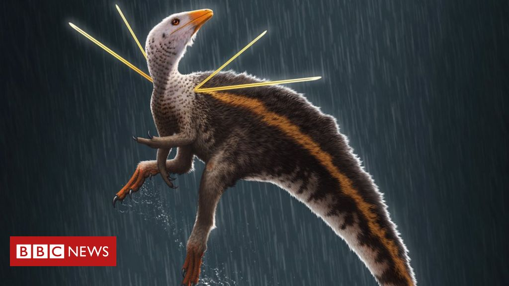
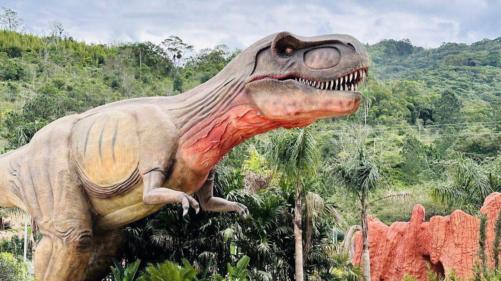
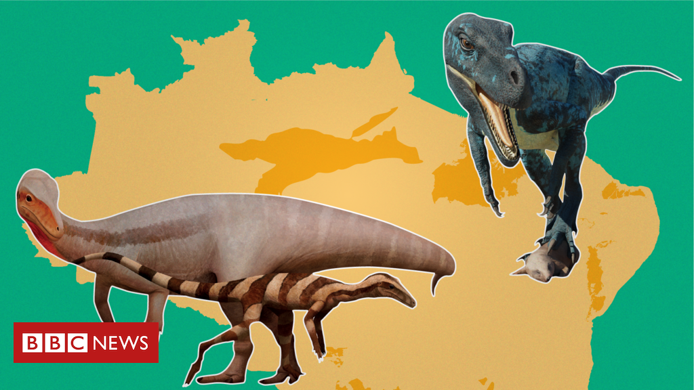
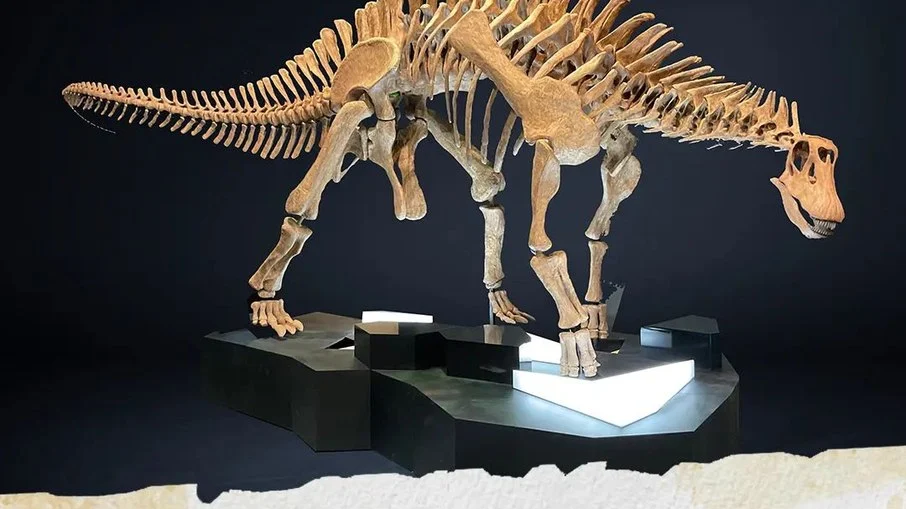
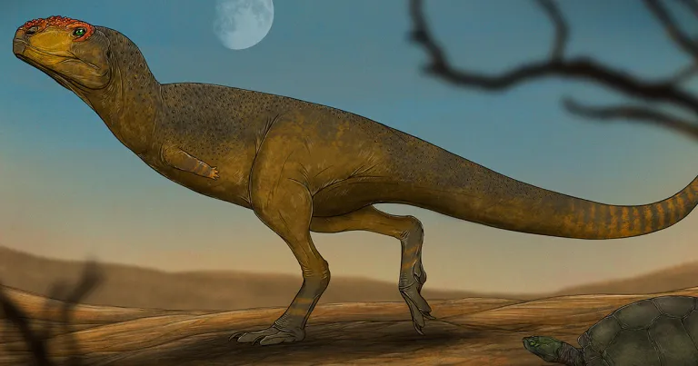
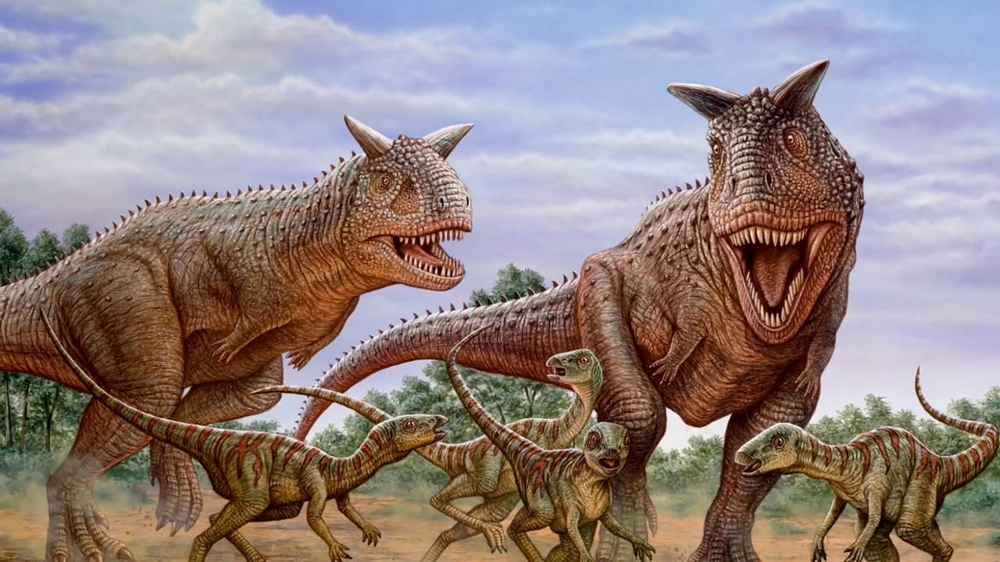
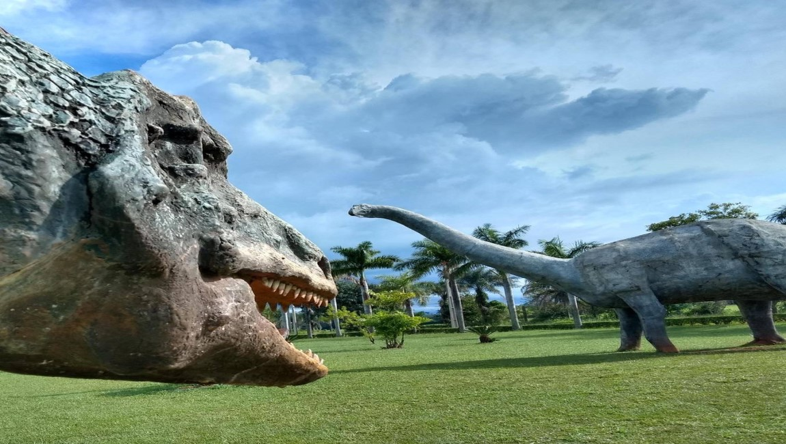

EvoLab
Home
Timeline
Evolução
Área Kids
Notícias
Contato
Nova série é a mais convincente reconstrução da Era dos Dinossauros
É possível reviver dinossauros como em Jurassic Park?
Os dinossauros teriam sobrevivido se não fossem atingidos por asteroide?

Dinossauro achado no Brasil foi pioneiro em 'visual chamativo' como dos pavões, mostra estudo

Maior parque de dinossauros do Brasil abre as portas em Balneário Camboriú e vai gerar 100 empregos diretos

As fascinantes histórias de 7 dinossauros encontrados no Brasil

Parque Ibirapuera ganhará exposição sobre dinossauros

Dinossauro – Jornal da USP

5 fatos importantes sobre os dinossauros
Vulcão e meteoro acabaram com os dinossauros

Dinossauros e vestígios arqueólogos marcam o patrimônio científico brasileiro
Últimas notícias de Dinossauros no History Channel